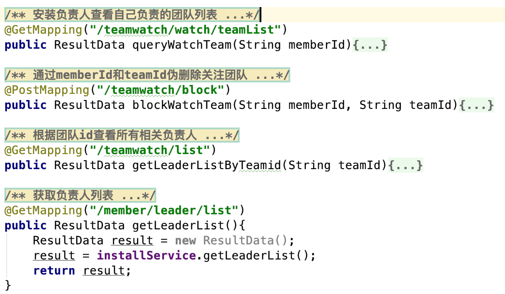
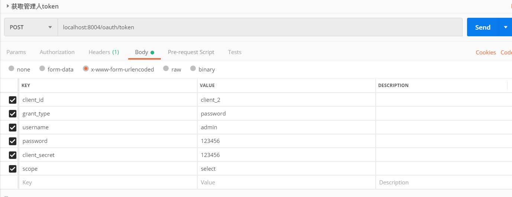

前言
开学第三个月的时间，经历了在私募公司两个月需求不明的实习，回归果麦项目的第一个周期任务也结束了。经过了一段时间的熟悉又上手了spring boot+spring cloud项目。还好有之前的项目总结，上手熟悉没有花费太多的时间，同样，这次也做好总结，方便回顾学习，温故而知新。
这次是果麦新风install模块的功能开发，先贴上学长的要求和我的完成结果：
我说下前端显示的情况：
（1）首先我会与一个负责人列表，这个你要去查team_member里role为1的用户返回给我
（2）点击每一个member我要知道它所关注的所有团队，要能删除这个团队，或者添加一个新的关注团队。
（3）另外，你还需要给我提供一个根据团队id查看所有相关负责人的接口
完成
（1）installdesk/MemberController.java–>leaderList()
（2）installdesk/TeamWatchController.java–>watches() block() watch()
（3）installdesk/TeamWatchController.java–>list()
本来以为只是常规的service/dao/db curd，但还是有比较多的新内容，installdesk模块的接口需求涉及mybatis的多表连接（有问题也有发现），完成后将接口调用加到management里面，并且想要通过管理员权限调用接口进行测试还需要启动auth admin模块调用接口获取token。总之，我又踩了很多坑。。。
踩坑经历
1、由于自己的鱼唇
首先浪费掉最多时间的永远是自己的愚蠢。一开始进行多表连接由于一开始流程没通过我将结果语句注释掉了，为了能在先验证mybatis的多表连接有没有打通，结果在最后都实现了却忘记了改回来，导致浪费了巨量的时间（自己永远意识不到自己的主动错误），最后还是通过断点debug的过程中发现结果正确却没返回出来才解决。
然而事情还没有完，后面本地运行auth admin报错数据源错误，一开始是配置文件propertise中的数据源没有更新成本地的导致了这样的问题，在改正之后却依旧报错数据源错误，我反复的检查代码逻辑的可能错误，又浪费了大量的时间并且期间陷入了自我怀疑，最后发现是macbook的touchbar启动的并不是更新后的启动类（我一直在运行之前错误的启动类），又是自己的行为导致的问题，以后在更新过启动类后一定要手动找到真实的启动类启动，不能自然的依赖touch bar去运行程序。。
2、枚举类型的查询
枚举类型的查询除了需要实现handler以外还需要注意要通过真实值来查询。例如又如下枚举对应关系{ordinary(0),leader(1)}，那么如果想要从数据库中搜索所有这一项为leader的表项，那么我们需要用1这个int类型去传如参数给mybatis的sql语句才能正确执行查询，如果使用ordinary或者leader，那么这个值会默认为0。
新学到的东西
1、mybatis多表连接查询
由于自己的鱼唇，这一部分多做了很多工作，但是也算是把两种多表连接都学习了一下吧。
1、一对一连接————通过association标签
xml文件内容如下
1 | <resultMap id="memberTeamVo" type="finley.gmair.model.installation.MemberTeam"> |
这里用到的是MemberTeam和Member两个实体类，注意association中的Member类需要作为属性写在MemberTeam里面
1 | public class MemberTeam { |
最后返回的结果将是这个外层标签的MemberTeam类型，而表连接中另一个表的内容将会通过MemberTeam.member返回出来。
最终返回的将是一个完整的MemberTeam类型，sql语句只能保证MemberTeam的哪些属性是非null的，如果想要控制返回的MemberTeam，可以通过限制它属性的get&set方法来达成，如果不加get&set方法，这个属性就不会出现在返回值中，但是不会影响数据库查询时的逻辑
2、一对多连接————通过collection标签
整体使用与association标签的使用类似，只是一个实体类在另一个主实体类中的不再表现为唯一属性值，而是list<属性值>，同样最后会通过主实体类返回。
我在项目中使用的是一对一连接，多对多代码使用参考以下博客
————————————————
版权声明：本文为CSDN博主「hyhcloud」的原创文章，遵循 CC 4.0 BY-SA 版权协议，转载请附上原文出处链接及本声明。
原文链接：https://blog.csdn.net/Huangyuhua068/article/details/83176160
1 | <resultMap id="userMap" type="user"> |
2、将接口调用加到management
这一部分涉及management中的service和controller两个部分
首先我们需要将接口加到management下的service中，需要注意的是1、url的不同。2、参数要添加注释。3、接口名可以自定义
1 | @GetMapping("/install/teamwatch/watch/teamList") |
然后要在controller中调用接口

3、获取token进行测试
management模块的测试需要管理员权限，需要持有token才能调用management模块的http接口。
而想要获取token需要先启动auth-admin模块然后发出请求获取token，这里由于数据源异常踩了很久的坑，前面踩坑经历有提到就不多说了。

总结
这半个月的任务量其实不大，新接触的内容有mybatis多表连接查询，management实现接口调用，获取token得到管理员权限。可以说还是比较有收获的，期间碰到的问题也不少但是都解决了，debug能力++，希望下半个月的新任务能顺利也能有收获，少拖延多做事！